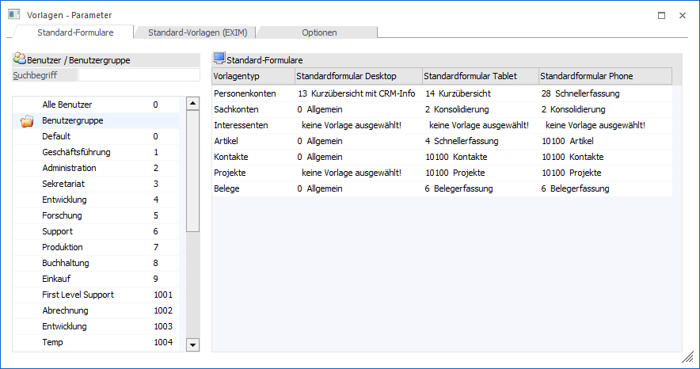
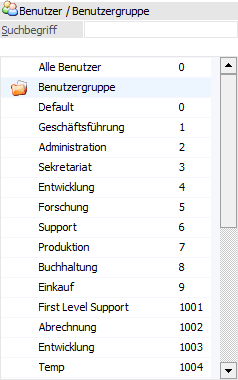
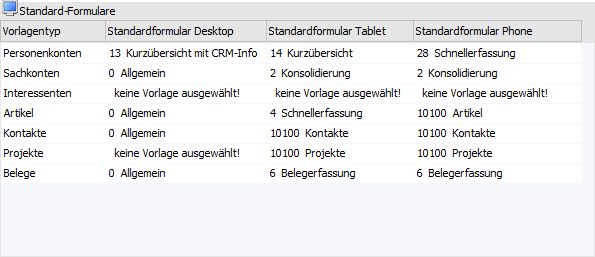

In diesem Register können "Standard-Formulare" für bestehende individuelle Formulare definiert werden.
Mit dieser Einstellung kann hinterlegt werden, dass ein bestimmtes Individuelles Formular immer für einen Benutzer bzw. Benutzergruppe beim Öffnen eines Stamm- bzw. Erfassungs-Fenster verwendet wird, egal welches Individuelle Formular beim letzten Mal vom Benutzer verwendet worden ist. Zudem kann die Vorlagendefinition hinsichtlich des Ausgabe-/Anzeigemediums weiterhin angepasst werden.

Innerhalb des Register stehen zwei Tabellen zur Verfügung:
Tabelle "Benutzer / Benutzergruppe"

In der linken Tabelle kann ausgewählt werden, für welchen Benutzer/welche Benutzergruppe (bzw. alle Benutzer) ein individuelles Formular als Standardvorlage definiert werden soll.
Ø Suchbegriff
Die Auswahl in dieser Tabelle kann durch Eingabe eines Suchbegriffs eingeschränkt werden. Es kann per Eingabe sowohl nach Nummer, als auch nach der Bezeichnung gesucht werden.
Tabelle "Standard-Formulare"

In der rechten Tabelle kann für einzelne Vorlagentypen ein Standardformular ausgewählt werden. Es kann ein Standard-Formular bei den folgenden Vorlagentypen hinterlegt werden:
ü Personenkonten
ü Sachkonten
ü Interessenten
ü Artikel
ü Kontakte
ü Projekte
ü Belege
In der jeweiligen Auswahl stehen die Optionen "keine Vorlage ausgewählt!", "0 - Allgemein"
und die angelegten individuellen Formulare zur Auswahl. Diese Selektionsmöglichkeiten können innerhalb der Spalten…
ü Standardformular Desktop
ü Standardformular Tablet
ü Standardformular Phone
… in Bezug auf das jeweilige Ausgabemedium/-Format spezifiziert werden.
Achtung
Es stehen nur jene Individuelle Formulare zur Verfügung, für die beim Benutzer, bei der Benutzergruppe oder bei allen Benutzern eine Mindest-Berechtigung von "(1) lesen" in den Objekt-Berechtigungen hinterlegt ist (nähere Informationen entnehmen Sie bitte dem Kapitel "Objekt Berechtigungen").
Hinweis 1
Es können Objektberechtigungen auch für das "0 - Allgemein"-Formular (d.h. die Auslieferungs-Standardversion eines Fensters) vergeben werden. Auf diese Weise kann hinterlegt werden, dass nur bestimmte Benutzer bzw. Benutzergruppen eine Berechtigung für das "0 - Allgemein"-Formular haben.
Beim Öffnen von einem Stamm- bzw. Erfassungs-Fenster vom jeweiligen Vorlagentyp wird das Standard-Formular berücksichtigt, d.h. es wird (in dieser Reihenfolge) geprüft, ob ein Standardformular für den Benutzer, die Benutzergruppe oder "alle Benutzer" eingetragen ist. Ist dies der Fall, wird immer dieses beim Öffnen des Fensters verwendet. Wenn kein Standard-Formular eingetragen ist ("keine Vorlage ausgewählt"), wird das zuletzt vom Benutzer verwendetes Individuelle Formular verwendet.
Hinweis 2
Bei den individuellen Formularen für Belege gilt das Standard-Formular nur für das "Belegerfassen" (Ctrl+1), nicht aber für den Menüpunkt "Individuelles Formular" (Ctrl+4; hier steht das "Allgemein"-Formular auch nicht zur Verfügung). Das Standard-Formular wird beim Aufruf des Belegerfassens aus dem Belegmanagement, von einem Beleg-DrillDown, und aus dem Buchen Dialog-Stapel-Fenster berücksichtigt. Zusätzlich auch beim Aufruf des Belegerfassens aus "Kundenbestellungen bearbeiten", "Beleg Quick Erfassen", und "Lieferantenlieferungen bearbeiten".
Hinweis 3
Wenn beim Aufruf des Fensters aus dem Cockpit keine Vorlage übergeben wird (d.h. in der Cockpit-Definition ist keine Vorlage eingetragen), wird das Standard-Formular geöffnet, ansonsten wird die aus dem Cockpit übergebene Vorlage verwendet.
Tabellenbuttons

Ø Ausgabe Excel
Durch Anwahl des Buttons "Ausgabe Excel" wird der Inhalt der Tabelle an Microsoft Excel übergeben.
Ø Tabelleneinstellungen speichern
Die Spalten einer Tabelle können grundsätzlich an beliebige Positionen verschoben, bzw. in der Breite entsprechend angepasst werden. Durch Anwahl des Buttons "Tabelleneinstellungen speichern" werden die Einstellungen benutzerspezifisch gespeichert und bei dem nächsten Aufruf des Programmpunktes wieder vorgeschlagen.
Ø Gesamteinstellungen speichern
Im Gegensatz zu "Tabelleneinstellungen speichern" können mit "Gesamteinstellungen speichern" mehrere Tabellenaufbauten gespeichert und nach Wunsch geladen werden. Zusätzlich werden Sonderfunktionen der Tabelle (z.B. "Spalte gruppieren") ebenfalls bei der Speicherung bedacht.